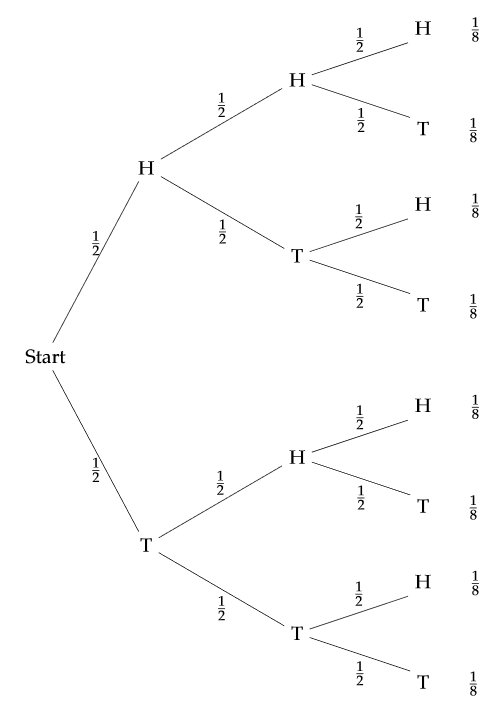
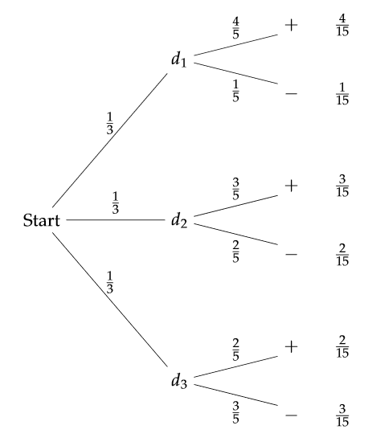
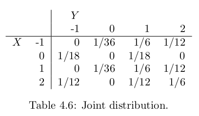

Chapter 4 - Conditional Probability
4.1 Discrete Conditional Probability
| Main: | Index |
| Previous: | 3.2 Combinations |
| Next: | 4.2 Continuous Conditional Probability |
Results
Conditional Probability
We call P(F|E) the conditional probability of F given E, and compute it using the formula $$ P(F|E) = \frac{P(F\cap E)}{P(E)}. $$
Definition 4.1
Le E and F be two events. We say that they are independent if both events have positive probability and, $$ P(E|F) = E \;\;\text{and}\;\; P(F|E) = P(F). $$ (Or at least one of the events has probability 0 or 1).
Theorem 4.1
Two events E and F are independent if and only if $$ P(E\cap F) = P(E)P(F). $$
Definition 4.2
A set of events A1, A2, ..., An are said to be mutually independent if for any subset {Ai, Aj, ..., Am}, we have $$ P(A_i\cap A_j\cap\ldots\cap A_m) = P(A_i)P(A_j)\cdots P(A_m), $$ or equivalently, if for any sequence Ac1, Ac2, ..., Acn with Acj = Aj $$ P(A_i^c\cap A_j^c\cap\ldots\cap A^c_m) = P(A_i^c)P(A_j^c)\cdots P(A_m^c). $$
Definition 4.3
Let X1,X2, ..., Xn be random variables associated with an experiment. Suppose that the sample space of Xi is the set Ri. Then the joint random variable X = (X1,X2, ..., Xn) is defined to be the random variable whose outcomes consist of ordered n-tuples of outcomes, with the ith coordinate lying in the set Ri. The sample space Ω of X is the cartesian product of the sets Ri: $$ \Omega = R_1\times R_2\times \ldots \times R_n. $$ The joint distribution function of X is the function which gives the probability of each of the outcomes of X.
Definition 4.4
The random variables X1,X2, ..., Xn are said to be mutually independent if $$ P(X_1 = r_1, \ldots, X_n = r_n) = P(X_1 = r_1)\cdots P(X_n = r_n) $$ for any choice of $r_1, \ldots, r_n$. Thus if X1,X2, ..., Xn are mutually independent, then the joint distribution function of the random variable $$ \overline{X} = (X_1, X_2, \ldots, X_n) $$ is just the product of the individual distribution functions. When two random variables are mutually independent, we shall say more briefly that they are independent.
Exercise 1
Assume E and F are two events with positive probabilities. Show that if P(E|F) = P(E), then P(F|E) = P(F).Answer
By assumption and definition of the conditional probability. $$ P(E) = P(E|F) = \frac{P(E\cap F)}{P(F)} \;\;\Longrightarrow\;\; P(E)P(F) = P(E\cap F). $$ Using this, $$ P(F|E) = \frac{P(F\cap E)}{P(E)} = \frac{P(F)P(E)}{P(E)} = P(F). $$
■
Exercise 2
A coin is tossed three times. What is the probability that exactly two heads occur, given that(a) the first outcome was a head?
(b) the first outcome was a tail?
(c) the first two outcomes were heads?
(d) the first two outcomes were tails?
(e) the first outcome was a head and the third outcome was a head?
Answer
Image below displays a helpful tree structure of all possible outcomes.
(a)
Let F be the event that the first toss is H, and note that P(F) = 1/2, and according to the tree structure below, the new sample space will be the top half of the tree. Given this new information, we can log the new outcomes, and the total number of Hs in parenthesis.
HH 1/8 (3) HT 1/8 (2) TH 1/8 (2) TT 1/8 (1)We already have one H from the first toss F, so the probability of getting exactly two heads, an even we call H, is 1/2. So P(F∩H) = 1/4. Calculating the conditional probability: $$ P(H|F) = \frac{P(F\cap H)}{P(F)} = \frac{1/4}{1/2} = 1/2. $$
(b)
Let G be the event that we get T on the first toss, with P(G) = 1/2. The part of the tree we are restricted to, with number of Hs:
HH 1/8 (2) HT 1/8 (1) TH 1/8 (1) TT 1/8 (0)Now P(G∩H) = 1/8. Calculating the conditional probability: $$ P(H|F) = \frac{P(F\cap H)}{P(F)} = \frac{1/8}{1/2} = 1/4. $$
(c)
Let K be the event that the first two tosses are H, so P(K) = 1/4. The restricted tree:
H 1/8 (3) T 1/8 (2)Only one possible outcome has 2 Hs, P(K∩H) = 1/8. $$ P(H|K) = \frac{P(H\cap K)}{P(K)} = \frac{1/8}{1/4} = 1/2. $$
(d)
Let M be the event that the first two tosses are T, so P(M) = 1/4. The restricted tree:
H 1/8 (1) T 1/8 (0)Now no outcome has 2 Hs, P(M∩H) = 0. By independence P(M∩H) = P(M)P(H) = 0.
(e)
A more tricky event, which we call L: first toss is a head, and the third toss is a head. Reading from the tree, P(L) = 1/8 + 1/8 = 1/4.
Getting H or T in the second toss have equal probability, so divide the new sample space into two parts each with probability 1/8. The only way to get exactly two H is if the second toss is T. $$ P(H|L) = \frac{P(H\cap L)}{P(L)} = \frac{1/8}{1/4} = 1/2. $$

■
Exercise 3
A die is rolled twice. What is the probability that the sum of the faces is greater than 7, given that(a) the first outcome was a 4?
(b) the first outcome was greater than 3?
(c) the first outcome was a 1?
(d) the first outcome was less than 5?
Answer
Let S be the event that the sum of the die is greater than 7.
(a)
Event A: first roll is a 4. P(A) = 1/6. Restricted tree with sum of values in parenthesis.
1 1/36 (5) 2 1/36 (6) 3 1/36 (7) 4 1/36 (8) 5 1/36 (9) 6 1/36 (10)The probability that we get greater than 7 is P(A∩S) = 1/36 + 1/36 + 1/36 = 3/36 = 1/12. $$ P(S|A) = \frac{P(S\cap A)}{P(A)} = \frac{1/12}{1/6} = 1/2. $$
(b)
Event B: first roll is greater than 3. P(B) = 1/2. Restricted tree with sum of values in parenthesis.
# 4 1 1/36 (5) 2 1/36 (6) 3 1/36 (7) 4 1/36 (8) 5 1/36 (9) 6 1/36 (10) # 5 1 1/36 (6) 2 1/36 (7) 3 1/36 (8) 4 1/36 (9) 5 1/36 (10) 6 1/36 (11) # 6 1 1/36 (7) 2 1/36 (8) 3 1/36 (9) 4 1/36 (10) 5 1/36 (11) 6 1/36 (12)Adding up all events that give a value greater than 7 gives us P(B∩S) = 12/36 = 1/3. $$ P(S|A) = \frac{P(S\cap B)}{P(B)} = \frac{1/3}{1/2} = 2/3. $$
(c)
Event C: first roll is a 1. P(C) = 1/6. Restricted tree with sum of values in parenthesis.
1 1/36 (2) 2 1/36 (3) 3 1/36 (4) 4 1/36 (5) 5 1/36 (6) 6 1/36 (7)No values are greater than 7. The probability then becomes P(C∩S) = P(C)P(S) = 0.
(d)
Event D: first roll is smaller than 5, i.e. 1-4. P(D) = 2/3. Restricted tree with sum of values in parenthesis.
# 1 1 1/36 (2) 2 1/36 (3) 3 1/36 (4) 4 1/36 (5) 5 1/36 (6) 6 1/36 (7) # 2 1 1/36 (3) 2 1/36 (4) 3 1/36 (5) 4 1/36 (6) 5 1/36 (7) 6 1/36 (8) # 3 1 1/36 (4) 2 1/36 (5) 3 1/36 (6) 4 1/36 (7) 5 1/36 (8) 6 1/36 (9) # 4 1 1/36 (5) 2 1/36 (6) 3 1/36 (7) 4 1/36 (8) 5 1/36 (9) 6 1/36 (10)Counting all occurrences greater than 7 gives P(D∩S) = 6/36 = 1/6. $$ P(S|D) = \frac{P(S\cap D)}{P(D)} = \frac{1/6}{2/3} = 1/4. $$
■
Exercise 4
A card is drawn at random from a deck of cards. What is the probability that(a) it is a heart, given that it is red?
(b) it is higher than a 10, given that it is a heart? (Interpret J, Q, K, A as 11, 12, 13, 14.)
(c) it is a jack, given that it is red?
Answer
Informally!
(a)
P(Red) = 1/2. P(Heart ∩ Red) = 1/4 ==> P(Heart | Red) = 1/2.
(b)
P(Heart) = 1/4. P(Greater than 10 ∩ Heart) = 4/52 ==> P(Gt10 | Heart) = 4/13.
(c)
P(Red) = 1/2. P(Jack ∩ Red) = 1/13 ==> P(Jack | Red) = 2/13.
■
Exercise 5
A coin is tossed three times. Consider the following eventsA: Heads on the first toss.
B: Tails on the second.
C: Heads on the third toss.
D: All three outcomes the same (HHH or TTT).
E: Exactly one head turns up.
(a) Which of the following pairs of these events are independent?
(1) A, B
(2) A, D
(3) A, E
(4) D, E
(b) Which of the following triples of these events are independent?
(2) A, D
(3) A, E
(4) D, E
(1) A, B, C
(2) A, B, D
(3) C, D, E
(2) A, B, D
(3) C, D, E
Answer
(a)
(1) A, B. Clearly independent, both have a probability of 1/2 and both happening has a probability of 1/4.
(2) A, D. Independent!
P(D) = P({HHH}) + P({TTT}) = 1/4. P(A) = P({HTT}) + P({HTH}) + P({HHT}) + P({HHH}) = 1/2. So the intersection is, P(A∩D) = P({HHH}) = 1/8. And P(D|A) = P(A∩D)/P(A) = (1/8)/(1/2) = 1/4 which is equal to P(D).
(3) A, E. Dependent. A is a subset of E.
P(A) = 1/2. P(E) = P({HTT}) + P({THT}) + P({TTH}) = 3/8. The intersection becomes, P(A∩E) = P({HTT}) = 1/8. And so, P(E|A) = P(A∩E)/P(A) = (1/8)/(1/2) = 1/4, so the conditional probability is changed.
(4) D, E. Dependent.
As shown before, P(D) = 2/8 and P(E) = 3/8.
Writing out the sets.
D = {HHH, TTT} and E = {HTT, THT, TTH}. The interscetion is empty, so P(D∩E) = P(∅) = 0 which is different from the product; P(D)P(E) = (2/8)(3/8) = 6/64 = 3/32.
(b)
Now we need to check that all pair of subsets are mutually independent.
(1) A, B, C. We have already established that A and B are independent, so we have to check that A, C and B, C are independent. But all these sets are obviously pairwise independent and since P(A∩B∩C) = 1/8 and P(A)P(B)P(C) = 1/8 so are A, B, C.
(2) A, B, D. We have shown that A, B and A, D are independent, so we check if B, D are independent.
P(D) = P({HHH}) + P({TTT}) = 1/4. P(B) = P({HTH}) + P({HTT}) + P({TTH}) + P({TTT}) = 1/2. So the intersection is, P(B∩D) = P({TTT}) = 1/8. And P(D|B) = P(B∩D)/P(B) = (1/8)/(1/2) = 1/4 which is equal to P(D).
Finally: P(A)P(B)P(D) = (1/2)(1/2)(1/4) = 1/16. and P(A∩B∩D) = P(∅) = 0. These probabilities are not equal, so A, B, D are not independent.
(3) C, D, E. As shown earlier, D and E are dependent, so this is not independent.
■
Exercise 6
From a deck of five cards numbered 2, 4, 6, 8, and 10, respectively, a card is drawn at random and replaced. This is done three times. What is the probability that the card numbered 2 was drawn exactly two times, given that the sum of the numbers on the three draws is 12?Answer
If we count all possible outcomes, we get a total of 53 = 125 possible draws, and each of them have equal probability of 1/125.
The possible ways of getting 12 with three cards are:
{4, 4, 4}, 6 possible permutations of {6, 4, 2}, 3 possible permutations of {2, 2, 8}, which gives 10 possible outcomes. So if we define the event T as getting 12, we get P(T) = 10/125 = 2/25.
Out of these, there are 3 possible ways of getting 12 when we draw 2 twice. We define this outcome as Q, so P(Q) = 3/125. Since Q is a subset of T, we get P(Q∩T) = 3/125. So, $$ P(Q|T) = \frac{P(Q\cap T)}{P(T)} = \frac{3/125}{2/25} = 75/250 = 3/10 = 0.3. $$
■
Exercise 7
A coin is tossed twice. Consider the following events.A: Heads on the first toss.
B: Heads on the second toss.
C: The two tosses come out the same.
(a) Show that A, B, C are pairwise independent but not independent.
(b) Show that C is independent of A and B but not of A ∩ B.
Answer
The outcome for this problem: Ω = {HH, HT, TH, TT}, each with probability 1/4.
A = {HT, HH} and P(A) = 1/2.
B = {TH, HH} and P(B) = 1/2.
C = {TT, HH} and P(C) = 1/2.
(a)
So, A∩B = {HH} and P(A∩B) = 1/4, and P(A)P(B) = 1/4, so A, B are independent.
A∩C = {HH} and P(A∩C) = 1/4, and P(A)P(C) = 1/4, so A, C are independent.
B∩C = {HH} and P(B∩C) = 1/4, and P(B)P(C) = 1/4, so B, C are independent.
However, A∩B∩C = {HH}, and P(A∩B∩C) = 1/4, but P(A)P(B)P(C) = 1/8, so all sets are pairwise independent, but all three sets are not.
(b)
As shown in (a), C is independent of A and B. The event A∩B = {HH} so P(A∩B) = 1/4. We also get A∩B∩C = {HH} so P(A∩B∩C) = 1/4 and P(A∩B)P(C) = 1/8. Since these probabilities are not equal, the events are not independent.
■
Exercise 8
Let Ω = {a, b, c, d, e, f}. Assume that m(a) = m(b) = 1/8 and m(c) = m(d) = m(e) = m(f) = 3/16. Let A, B, and C be the events A = {d, e, a}, B = {c, e, a}, C = {c, d, a}. Show that P (A ∩ B ∩ C) = P(A)P(B)P(C) but no two of these events are independent.Answer
First we calculate the set probabilities.
P(A) = m(d) + m(e) + m(a) = 3/16 + 3/16 + 2/16 = 1/2
P(B) = m(c) + m(e) + m(a) = 3/16 + 3/16 + 2/16 = 1/2
P(C) = m(c) + m(d) + m(a) = 3/16 + 3/16 + 2/16 = 1/2.
A ∩ B ∩ C = {a} ==> P(A ∩ B ∩ C) = 1/8. Also, P(A)P(B)P(C) = 1/8, so these probabilities are the same.
Note that P(A)P(B) = 1/4. But A ∩ B = {e, a} and P(A ∩ B) = 5/16 - so A, B are note independent.
The argument is exactly the same for A, C and B, C.
■
Exercise 9
What is the probability that a family of two children has(a) two boys given that it has at least one boy?
(b) two boys given that the first child is a boy?
Answer
Assuming that the probability for B (boy) and G (girl) are both 1/2. The full outcome:
Ω = {BB, BG, GB, GG}, each with probability 1/4.
Let S be the event that the family has two boys. Let F be the event that the first is a boy, and let E be the event that either child is a boy. Writing out the sets. (S; sons, F: first is boy, E: either is boy)
S = {BB}, and P(S) = 1/4
F = {BG, BB}, and P(F) = 1/2
E = {GB, BB, BG}, and P(E) = 3/4
(a) We want to calculate P(S|E).
S∩E = {BB}, so P(S∩E) = 1/4.
P(S|E) = P(S∩E)/P(E) = (1/4)/(3/4) = 4/12 = 1/3.
(b) We want to calculate P(S|F).
S∩F = {BB}, so P(S∩F) = 1/4.
P(S|F) = P(S∩F)/P(F) = (1/4)/(1/2) = 2/4 = 1/2.
■
Exercise 10
Skipped - data unavailableExercise 11
Simulate the Monty Hall problem. Carefully state any assumptions that you have made when writing the program. Which version of the problem do you think that you are simulating?Answer
Do not make any particular assumptions? The winning door is a random sample from {1, 2, 3}. Then the initial door choice is another random sample of {1, 2, 3}. Then there are two strategies the contestant can select: stay with the initial choice or switch to another door. After simulating 1000 games, the winning rate for staying is roughly 1/3, and the win rate for switching is roughly 2/3. (As described in the text, this simulation reflects the standard choice that Marilyin assumed).
# 04.01 - Exercise 11 - Monty Hall
RunMonty <- function(strat="stay", report = FALSE) {
# Draw winning door
winDoor = sample(1:3, size=1)
# Contestant door selection
contDoor = sample(1:3, size=1)
altDoor = 0
if (winDoor == contDoor) {
# Contestant has currently selected the right door
# Host opens a door at random
# Contestant can switch to altDoor (remaining closed)
altDoor = sample(setdiff(1:3, winDoor), size=1)
} else {
# Contestant selects wrong door
# Host opens remaining door
# altDoor becomes winDoor
altDoor = winDoor
}
# Contestant strategy
win = 0
if (strat == "stay") {
if (contDoor == winDoor) {
win = 1
}
} else {
if (altDoor == winDoor) {
win = 1
}
}
if(report) {
cat(sprintf("Winning door: %d \n", winDoor))
cat(sprintf("First select.: %d \n", contDoor))
if (strat == "stay") {
cat(sprintf("Final select.: %d \n", contDoor))
} else {
cat(sprintf("Final select.: %d \n", altDoor))
}
cat(sprintf("-------\n"))
if (win == 1) {
cat(sprintf("OUTCOME : WIN\n"))
} else {
cat(sprintf("OUTCOME : LOSS\n"))
}
}
return(win)
}
RunMonty(strat = "stay", report = TRUE)
RunMonty(strat = "switch", report = TRUE)
# Run 1000 times with both strategies
NGAMES = 1000
stratStay = rep(0, NGAMES)
stratSwitch = rep(0, NGAMES)
for(n in 1:NGAMES) {
stratStay[n] = RunMonty(strat = "stay")
stratSwitch[n] = RunMonty(strat = "switch")
}
mean(stratStay)
mean(stratSwitch)
> RunMonty(strat = "stay", report = TRUE) Winning door: 2 First select.: 1 Final select.: 1 ------- OUTCOME : LOSS > RunMonty(strat = "switch", report = TRUE) Winning door: 3 First select.: 2 Final select.: 3 ------- OUTCOME : WIN # Simulating 1000 games > mean(stratStay) [1] 0.338 > mean(stratSwitch) [1] 0.676
■
Exercise 12
In Example 4.17, how large must the prior probability of cancer be to give a posterior probability of .5 for cancer given a positive test?Answer
Repeating the example here.
Example 4.17 A doctor gives a patient a test for a particular cancer. Before the
results of the test, the only evidence the doctor has to go on is that 1 woman
in 1000 has this cancer. Experience has shown that, in 99 percent of the cases in
which cancer is present, the test is positive; and in 95 percent of the cases in which
it is not present, it is negative. If the test turns out to be positive, what probability
should the doctor assign to the event that cancer is present? An alternative form
of this question is to ask for the relative frequencies of false positives and cancers.
We are given that prior(cancer) = .001 and prior(not cancer) = .999. We
know also that P (+|cancer) = .99, P (−|cancer) = .01, P (+|not cancer) = .05,
and P (−|not cancer) = .95. Using this data gives the result shown in Figure 4.5.
We see now that the probability of cancer given a positive test has only increased
from .001 to .019. While this is nearly a twenty-fold increase, the probability that
the patient has the cancer is still small. Stated in another way, among the positive
results, 98.1 percent are false positives, and 1.9 percent are cancers. When a group
of second-year medical students was asked this question, over half of the students
incorrectly guessed the probability to be greater than .5.
Solving this numerically and finding that a prior(cancer) = 0.048 leads to a probability of 0.5.
Code:
# 04.01 - Exercise 12 - Achieving 0.5
### Initial tree
c = 0.001
n = 1 - c
cPos = 0.99
cNeg = 0.01
nPos = 0.05
nNeg = 0.95
P_pos_g_c = round(c*cPos,3)
P_neg_g_c = round(c*cNeg,3)
P_pos_g_n = round(n*nPos,3)
P_neg_g_n = round(n*nNeg,3)
P_pos_g_c
P_neg_g_c
P_pos_g_n
P_neg_g_n
### Initial reverse tree
posRate = P_pos_g_c + P_pos_g_n
negRate = 1 - posRate
### Reverse tree
P_pos_g_c/posRate
### Adjusted tree
c = 0.048
n = 1 - c
cPos = 0.99
cNeg = 0.01
nPos = 0.05
nNeg = 0.95
P_pos_g_c = round(c*cPos,3)
P_neg_g_c = round(c*cNeg,3)
P_pos_g_n = round(n*nPos,3)
P_neg_g_n = round(n*nNeg,3)
P_pos_g_c
P_neg_g_c
P_pos_g_n
P_neg_g_n
### Initial reverse tree
posRate = P_pos_g_c + P_pos_g_n
negRate = 1 - posRate
### Reverse tree
P_pos_g_c/posRate
Output:
> ### Reverse tree [c = 0.001] > P_pos_g_c/posRate [1] 0.01960784 > ### Reverse tree [c = 0.048] > P_pos_g_c/posRate [1] 0.5
■
Exercise 13
Two cards are drawn from a bridge deck. What is the probability that the second card drawn is red?Answer
Assuming this is a standard deck of cards.
There are two cases that must be considered. The first card can either be black or red, each with 1/2 probability. We define R as the event that the second card is red. A is the event that the first card is black, and B is the event that the first card is red. Then P(A) = P(B) = 1/2.
If the first card is black, then P(R|A) = 26/51. If the first card is red, then P(R|B) = 25/51.
By the law of total probability,
P(R) = P(A)P(R|A) + P(B)P(R|B) = (1/2)(26/51) + (1/2)(25/51) = (51/102) = 0.5.
■
Exercise 14
If P(Bc) = 1/4 and P(A|B) = 1/2, what is P(A ∩ B)?Answer
By law of complement, P(B) = 1 - P(Bc) = 3/4.
By definition of conditional probability, $$ P(A|B) = \frac{P(A\cap B)}{P(B)} \;\;\Longrightarrow\;\; P(A\cap B) = P(A|B)P(B) = (1/2)(3/4) = 3/8. $$
■
Exercise 15
(a) What is the probability that your bridge partner has exactly two aces, given that she has at least one ace?(b) What is the probability that your bridge partner has exactly two aces, given that she has the ace of spades?
Answer
(a)
In a game of bridge there are 4 players that each get 13 cards. So our partner has 13 cards, excluding our two opponents' cards as well as our cards. As I later found out, I calculated the probability of having exactly two aces, given that you have one ace. Let F be the event that the player gets one ace, and S the event that the player gets two aces.
In this case, S is a subset of F, so P(F|S) = P(F∩S)/P(F) = P(S)/P(F). $$ P(F) = \frac{\binom{4}{1}\binom{48}{12}}{\binom{52}{13}} \approx 0.43887 $$ $$ P(S) = \frac{\binom{4}{2}\binom{48}{11}}{\binom{52}{13}} \approx 0.2134 $$ So, P(S|F) = P(S)/P(F) ≈ 0.2134/0.43887 ≈ 0.4864.
Instead, we want to find the probability of exactly two aces, given that the player has at least one ace. Counting all possible draws of getting at least one ace: binom(52, 13) - binom(48, 13), i.e. all possible draws minus all possible draws that don't contain any of the aces. Then for T: exactly two aces, the probability becomes: $$ P(T) = \frac{\binom{4}{2}\binom{48}{11}}{\binom{52}{13} - \binom{48}{13}} \approx 0.307. $$
(b)
■
Exercise 16
Prove that for any three events A, B, C, each having positive probability, and with the property that P(A ∩ B) > 0,P(A ∩ B ∩ C) = P(A)P(B|A)P(C|A ∩ B).
Answer
Define Q = A ∩ B, so P(Q) = P(A ∩ B) > 0.
By definition of conditional probability,
P(C|Q) = P(Q ∩ C)/P(Q) ==> P(Q ∩ C) = P(Q)P(C|Q).
P(A|B) = P(A ∩ B)/P(B) ==> P(Q) = P(A ∩ B) = P(A)P(B|A).
Then, using both of these, $$ P(A\cap B\cap C) = P(Q\cap C) = P(Q)P(C|Q) = P(A)P(B|A)P(C|A\cap B). $$
■
Exercise 17
Prove that if A and B are independent so are(a) A and Bc
(b) Ac and Bc
Answer
By independence, P(A ∩ B) = P(A)P(B). Also, by law of complements, P(Bc) = 1 - P(B).
(a)
\begin{align} P(A) &= P(A\cap B) + P(A\cap B^c) \\&\\ P(A\cap B^c) &= P(A) - P(A\cap B) \\&\\ P(A\cap B^c) &= P(A) - P(A)P(B) \\&\\ P(A\cap B^c) &= P(A)[1 - P(B)] \\&\\ P(A\cap B^c) &= P(A)P(B^c), \end{align} which by Theorem 4.1 shows that A and Bc are independent.
(b)
We can apply the result from (a) to Ac and B. Then, \begin{align} P(A^c) &= P(A^c\cap B) + P(A^c\cap B^c) \\&\\ P(A^c\cap B^c) &= P(A^c) - P(A^c\cap B) \\&\\ P(A^c\cap B^c) &= P(A^c) - P(A^c)P(B) \\&\\ P(A^c\cap B^c) &= P(A^c)[1 - P(B)] \\&\\ P(A^c\cap B^c) &= P(A^c)P(B^c), \end{align} which by Theorem 4.1 shows that Ac and Bc are independent.
■
Exercise 18
A doctor assumes that a patient has one of three diseases d1, d2, or d3. Before any test, he assumes an equal probability for each disease. He carries out a test that will be positive with probability 0.8 if the patient has d1, 0.6 if he has disease d2, and 0.4 if he has disease d3. Given that the outcome of the test was positive, what probabilities should the doctor now assign to the three possible diseases?Answer
Based on the information, we construct the following tree.

And then we get the following reverse tree.

The new probabilities are P(d1|+) = 4/9, P(d2|+) = 3/9 and P(d3|+) = 2/9.
■
Exercise 19
In a poker hand, John has a very strong hand and bets 5 dollars. The probability that Mary has a better hand is 0.04. If Mary had a better hand she would raise with probability 0.9, but with a poorer hand she would only raise with probability 0.1. If Mary raises, what is the probability that she has a better hand than John does?Answer
Let B be the event that Mary has a better hand than John. We know that P(B) = 0.04, and then the probability that Mary has a worse hand is
P(Bc) = 1 - P(B) = 0.96.
Next, we define R as the event that Mary raises. As given, P(R|B) = 0.9 and P(R|Bc) = 0.1.
We are going to calculate P(B|R). And for that we use Bayes' Theorem. \begin{align} P(B|R) &= \frac{P(R|B)P(B)}{P(R|B)P(B) + P(R|B^c)P(B^c)} \\&\\ &= \frac{(0.9)(0.04)}{(0.9)(0.04) + (0.1)(0.96)} \\&\\ &= \frac{0.036}{0.036 + 0.096} \\&\\ &= \frac{0.036}{0.132} \\&\\ &\approx 0.272727\ldots \end{align}
■
Exercise 20
The Polya urn model for contagion is as follows: We start with an urn which contains one white ball and one black ball. At each second we choose a ball at random from the urn and replace this ball and add one more of the color chosen. Write a program to simulate this model, and see if you can make any predictions about the proportion of white balls in the urn after a large number of draws. Is there a tendency to have a large fraction of balls of the same color in the long run?Answer
It's impossible to make any predictions. Sometimes a very high proportion of the balls are either white or black after 1000 draws, which all depends on the outcome of the first draws. If by chance a lot of black balls are drawn, it will be a self-perpetuating result to get more black etc.
Code:
# 04.01 - Exercise 20 - Simulating the Polya Urn
NDRAWS = 1000
# 1 is white, 0 is black
urn = c(1, 0)
for(k in 1:NDRAWS) {
draw = sample(urn, size = 1)
urn = c(urn, draw)
}
mean(urn)
Output:
> mean(urn) [1] 0.9351297 > mean(urn) [1] 0.5828343 > mean(urn) [1] 0.09580838
■
Exercise 21
It is desired to find the probability that in a bridge deal each player receives an ace. A student argues as follows. It does not matter where the first ace goes. The second ace must go to one of the other three players and this occurs with probability 3/4. Then the next must go to one of two, an event of probability 1/2, and finally the last ace must go to the player who does not have an ace. This occurs with probability 1/4. The probability that all these events occur is the product (3/4)(1/2)(1/4) = 3/32. Is this argument correct?Answer
No, this argument is not correct, though the reasoning is understandable. The probability of distributing the aces will be conditional probabilities and the calculations will be a little more involved.
■
Exercise 22
One coin in a collection of 65 has two heads. The rest are fair. If a coin, chosen at random from the lot and then tossed, turns up heads 6 times in a row, what is the probability that it is the two-headed coin?Answer
Let F be the event that we pick a fair coin, so P(F) = 64/65. And if G is the event we pick the two headed coin, then P(G) = 1/65.
Now we let H be the event that we toss 6 heads in a row. Then P(H|F) = 1/26 = 1/64, while P(H|F) = 1.
Based on this information, we want to find P(G|H). Using Bayes' Theorem. \begin{align} P(G|H) &= \frac{P(H|G)P(G)}{P(H|G)P(G) + P(H|F)P(F)} \\&\\ &= \frac{(1)(1/65)}{(1)(1/65) + (1/64)(64/65)} \\&\\ &= \frac{1/65}{1/65 + 1/65} \\&\\ &= \frac{1/65}{2/65} \\&\\ &= \frac{1}{2} \end{align}
■
Exercise 23
You are given two urns and fifty balls. Half of the balls are white and half are black. You are asked to distribute the balls in the urns with no restriction placed on the number of either type in an urn. How should you distribute the balls in the urns to maximize the probability of obtaining a white ball if an urn is chosen at random and a ball drawn out at random? Justify your answer.Answer
Call the urns U and V, and drawing a white/black ball as the events W and B. We need to find the probabilities that maximizes P(W|U) and P(W|V). Since V = Uc, we get
P(W) = P(W|U) + P(W|V)
Using Bayes' Theorem, we can write this expressions like this: $$ P(W|U) = \frac{P(U|W)P(W)}{P(U|W)P(W) + P(U|B)P(B)} $$ $$ P(W|V) = \frac{P(V|W)P(W)}{P(V|W)P(W) + P(V|B)P(B)} $$ Since P(U) = P(V) = 1/2, and P(B) = P(W) = 1/2, we get: $$ P(W|U) = \frac{0.5P(U|W)}{0.5P(U|W) + 0.5P(U|B)} = \frac{P(U|W)}{P(U|W) + P(U|B)} $$ $$ P(W|V) = \frac{0.5P(V|W)}{0.5P(V|W) + 0.5P(V|B)} = \frac{P(V|W)}{P(V|W) + P(V|B)} $$ The probabilities are 'symmetric' so too many white balls in one will reduce the change in other. If U is all white and V is all black, it will give a 0.5 chance of getting W. If there is an even distribution, it will be a 0.5 of getting W. We can't do any better than that.
NOTE: This is incorrect. The best solution is to put one white ball and the rest of the black in one urn, and then all white in another. That gives a probability of nearly 3/4 of getting white!
■
Exercise 24
A fair coin is thrown n times. Show that the conditional probability of a head on any specified trial, given a total of k heads over the n trials, is k/n (k > 0).Answer
They want us to calculate P(H|Ti) for some arbitrary i = 1,...,n.
I don't understand what is meant by P(Ti|H)...
■
Exercise 25
A coin with probability p for heads is tossed n times. Let E be the event 'a head is obtained on the first toss' and Fk the event 'exactly k heads are obtained.' For which pairs (n, k) are E and Fk independent?Answer
From solutions manager. This is satisfied when $$ p\binom{n}{k}p^kq^{n-k} = p\binom{n-1}{k-1}p^{k-1}q^{n-k} $$ which is satisfied if and only if np = k, so p = k/n.
■
Exercise 26
Suppose that A and B are events such that P(A|B) = P(B|A) and P(A ∪ B) = 1 and P(A ∩ B) > 0. Prove that P(A) > 1/2.Answer
P(A|B) = P(A ∩ B)/P(B) and P(B|A) = P(A ∩ B)/P(A). Since these are equal, we can deduce that P(A) = P(B).
Next we use that P(A ∪ B) = 1 and the set identity to get: \begin{align} 1 = P(A\cup B) &= P(A) + P(B) - P(A\cap B) \\&\\ 1 &= P(A) + P(A) - P(A\cap B) \\&\\ 1 + P(A\cap B) &= 2P(A) \\&\\ \frac{1}{2} + \frac{P(A\cap B)}{2} &= P(A) \end{align} Since P(A ∩ B) > 0, it follows that P(A) = 1/2 + P(A ∩ B)/2 > 1/2, so P(A) > 1/2.
■
Exercise 27
In London, half of the days have some rain. The weather forecaster is correct 2/3 of the time, i.e., the probability that it rains, given that she has predicted rain, and the probability that it does not rain, given that she has predicted that it won’t rain, are both equal to 2/3. When rain is forecast, Mr. Pickwick takes his umbrella. When rain is not forecast, he takes it with probability 1/3. Find(a) the probability that Pickwick has no umbrella, given that it rains.
(b) the probability that he brings his umbrella, given that it doesn’t rain.
Answer
Defining some events.
R: Rain
N: No rain
F: Rain forecast
G: No rain forecast
U: Umbrella taken
Uc: Umbrella not brought
(a)
(b)
■
Exercise 28
(See book for full explanation)If you were the lawyer for the Collins couple how would you have countered the above argument?
Answer
The prosecution are treating all of these conditions as completely independent. Take 'girl with blonde hair' with probability 1/3 and 'girl with ponytail' with probability 1/10. As mentioned in the text, wearing hair in a ponytail is a choice that might change from day to day, so treating it as a full, independent probability is an oversimplification.
Treating 'man with mustache' with probability 1/4 and 'black man with beard' with probability 1/10 are also almost certainly not independent events, as a person with a beard is very likely to also have a mustache. Having both is maybe closer to a probability of 1/12 instead of 1/40.
Combining things like this will give a much lower overall probability.
■
Exercise 29
A student is applying to Harvard and Dartmouth. He estimates that he has a probability of 0.5 of being accepted at Dartmouth and 0.3 of being accepted at Harvard. He further estimates the probability that he will be accepted by both is 0.2. What is the probability that he is accepted by Dartmouth if he is accepted by Harvard? Is the event “accepted at Harvard” independent of the event “accepted at Dartmouth”?Answer
Defining some events.
D: Accepted at Dartmouth, P(D) = 1/2
H: Accepted at Harvard, P(H) = 3/10
P(D ∩ H) = 1/5
P(D|H) = P(D ∩ H)/P(H) = (1/5)/(3/10) = 10/15 = 2/3
If these events had been independent, then P(D|H) = P(D), which we see is not true.
■
Exercise 30
Luxco, a wholesale lightbulb manufacturer, has two factories. Factory A sells bulbs in lots that consists of 1000 regular and 2000 softglow bulbs each. Ran- dom sampling has shown that on the average there tend to be about 2 bad regular bulbs and 11 bad softglow bulbs per lot. At factory B the lot size is reversed—there are 2000 regular and 1000 softglow per lot—and there tend to be 5 bad regular and 6 bad softglow bulbs per lot.The manager of factory A asserts, “We’re obviously the better producer; our bad bulb rates are .2 percent and .55 percent compared to B’s .25 percent and .6 percent. We’re better at both regular and softglow bulbs by half of a tenth of a percent each.”
“Au contraire,” counters the manager of B, “each of our 3000 bulb lots con- tains only 11 bad bulbs, while A’s 3000 bulb lots contain 13. So our .37 percent bad bulb rate beats their .43 percent.” Who is right?
Answer
We normalize the error rates to per 1000 lightbulbs.
Factory A - error rates.
Regular: 2/1000
Softglow: 5.5/1000
Factory B - error rates.
Regular: 2.5/1000
Softglow: 6/1000
From this we can see that Factory A is having fewer faulty bulbs. Since softglow bulbs have a higher error rate, it can look like Factory B is doing better since they are producing fewer of the error prone type.
■
Exercise 31
Skipped... Still do not have dataExercise 32
Reference image for the exercise.(a) There has been a blizzard and Helen is trying to drive from Woodstock to Tunbridge, which are connected like the top graph in Figure 4.6. Here p and q are the probabilities that the two roads are passable. What is the probability that Helen can get from Woodstock to Tunbridge?
(b) Now suppose that Woodstock and Tunbridge are connected like the middle graph in Figure 4.6. What now is the probability that she can get from W to T ? Note that if we think of the roads as being components of a system, then in (a) and (b) we have computed the reliability of a system whose components are (a) in series and (b) in parallel.
(c) Now suppose W and T are connected like the bottom graph in Figure 4.6. Find the probability of Helen’s getting from W to T. Hint: If the road from C to D is impassable, it might as well not be there at all; if it is passable, then figure out how to use part (b) twice.
Answer
(a)
This is simply pq.
(b)
The probability is either p or q. If we want the maximum probability it is max(p, q).
(c)
Going from W to T can be done in several ways. The way with the highest probability is (W,D), (D,C) and (C,T) which has a (0.9)(0.95)(0.9) = 0.7695. If one road is impassable, there are alternatives...
Note: poorly formulated exercise! What was the point of this??
■
Exercise 33
Let A1, A2, and A3 be events, and let Bi represent either Ai or its complement Aci . Then there are eight possible choices for the triple (B1, B2, and B3). Prove that the events A1, A2, and A3 are independent if and only ifP(B1 ∩ B2 ∩ B3 ) = P(B1)P(B2)P(B3),
for all eight of the possible choices for the triple (B1, B2, and B3).
Answer
Solved this in a different way then intended. But if we assume that the Ai are independent, then by repeatedly using the result in Exercise 17, we can show that all possible permutations of complements are independent, from which it follows that we can always calculate
P(B1 ∩ B2 ∩ B3 ) = P(B1)P(B2)P(B3).
Conversely, if we can always represent the probability of the intersection as a product, then it follows that Ai are independent.
■
Exercise 34
Four women, A, B, C, and D, check their hats, and the hats are returned in a random manner. Let Ω be the set of all possible permutations of A, B, C, D. Let Xj = 1 if the jth woman gets her own hat back and 0 otherwise. What is the distribution of Xj? Are the Xj’s mutually independent?Answer
There are a total of 4·3·2·1 = 24 permutations. In all of these, there are 6 permutations where a woman gets her own hat back (refer to all outcomes in the output below). This gives us the distribution: $$ X_j = \left\{ \begin{matrix} 1, & 3/8 \\ 0, & 5/8 \end{matrix} \right. $$ Let A be the event that Xi = 1 and B the event that Xj = 1, and let i ≠ j. Then, P(Xi)P(Xj) = 9/64.
Now consider a specific case, when A and C are in the same place. There are only two possible outcomes out of 24 total: {A, B, C, D} and {A, D, C, B}, so P(Xi ∩ Xj) = 1/12. Since these values are not equal, the Xjs are NOT independent.
Code:
# 04.01 - Exercise 34 - Women and Hats
permutations <- function(n){
if(n==1){
return(matrix(1))
} else {
sp <- permutations(n-1)
p <- nrow(sp)
A <- matrix(nrow=n*p,ncol=n)
for(i in 1:n){
A[(i-1)*p+1:p,] <- cbind(i,sp+(sp>=i))
}
return(A)
}
}
outcomes = matrix(LETTERS[permutations(4)],ncol=4)
# Output
for(row in 1:12) {
cat(outcomes[row,1:4]," | ", outcomes[row+12,1:4] ,"\n")
}
# Check outcomes where e.g. A and C are correct
for(row in 1:24) {
if (outcomes[row, 1] == "A" & outcomes[row, 3] == "C") {
cat(outcomes[row,1:4],"\n")
}
}
Output:
A B C D | C A B D A B D C | C A D B A C B D | C B A D A C D B | C B D A A D B C | C D A B A D C B | C D B A B A C D | D A B C B A D C | D A C B B C A D | D B A C B C D A | D B C A B D A C | D C A B B D C A | D C B A
■
Exercise 35
A box has numbers from 1 to 10. A number is drawn at random. Let X1 be the number drawn. This number is replaced, and the ten numbers mixed. A second number X2 is drawn. Find the distributions of X1 and X2. Are X1 and X2 independent? Answer the same questions if the first number is not replaced before the second is drawn.Answer
Define S = {1, 2, ..., 10} as all numbers in the box. For the first draw, each number has the same probability of being drawn. We can specify the distribution.
P(X1 = k) = 1/10, for k∊S.
Since all numbers are replaced, the second distribution becomes the same.
P(X2 = k) = 1/10, for k∊S.
Any combination of numbers drawn will have a probability of 1/100 (this is completely analogous with a standard dice toss). For any k,m∊S
P(X1 = k ∩ X1 = m) = 1/100 = (1/10)(1/10) = P(X1 = k)P(X2 = m).
Hence, these results are independent. This is NOT true in the case where the numbers are not replaced.
■
Exercise 36
A die is thrown twice. Let X1 and X2 denote the outcomes. Define X = min(X1, X2). Find the distribution of X.Answer
Here are all outcomes of two dice tosses.
(1,1) (1,2) (1,3) (1,4) (1,5) (1,6) (2,1) (2,2) (2,3) (2,4) (2,5) (2,6) (3,1) (3,2) (3,3) (3,4) (3,5) (3,6) (4,1) (4,2) (4,3) (4,4) (4,5) (4,6) (5,1) (5,2) (5,3) (5,4) (5,5) (5,6) (6,1) (6,2) (6,3) (6,4) (6,5) (6,6)And here are the corresponding minimum values.
(1) (1) (1) (1) (1) (1) (1) (2) (2) (2) (2) (2) (1) (2) (3) (3) (3) (3) (1) (2) (3) (4) (4) (4) (1) (2) (3) (4) (5) (5) (1) (2) (3) (4) (5) (6)Reading off from this, we can specify the distribution of X.
P(X = 1) = 11/36
P(X = 2) = 9/36
P(X = 3) = 7/36
P(X = 4) = 5/36
P(X = 5) = 3/36
P(X = 6) = 1/36
Code:
# 04.01 - Exercise 36 - Minimal of dice toss
# Original dice toss
for(k in 1:6) {
for(m in 1:6) {
cat(sprintf("(%d,%d) ", k, m))
}
cat("\n")
}
cat("\n\n")
# Minimal dice toss
for(k in 1:6) {
for(m in 1:6) {
minVal = min(k, m)
cat(sprintf("(%d) ",minVal))
}
cat("\n")
}
■
Exercise 37
Given that P(X = a) = r, P(max(X, Y) = a) = s, and P(min(X, Y) = a) = t, show that you can determine u = P(Y = a) in terms of r, s, and t.Answer
Using some tricks related to join distributions. $$ P(\max(X, Y) = a) = P(X=a, Y\leq a) + P(X\leq a, Y=a) - P(X=a, Y=a) $$ $$ P(\min(X, Y) = a) = P(X=a, Y> a) + P(X> a, Y=a) + P(X=a, Y=a) $$ Adding these together: $$ P(\max(X, Y) = a) + P(\min(X, Y) = a) = P(X=a) + P(Y=a) $$ Where the last term is canceled, and $P(X=a, Y\leq a) + P(X=a, Y>a) = P(X=a)$ since we are summing over all available Y values, which basically becomes 1. $$ s + t = r + u \;\;\Longrightarrow\;\; u = s + t - u $$
■
Exercise 38
A fair coin is tossed three times. Let X be the number of heads that turn up on the first two tosses and Y the number of heads that turn up on the third toss. Give the distribution of(a) the random variables X and Y.
(b) the random variable Z = X + Y.
(c) the random variable W = X − Y.
Answer
(a)
Defining all possible outcomes of the two first coin tosses.
{HH}, {HT}, {TH}, {TT}
From this we can specify the distribution for X.P(X=0) = 1/4
P(X=1) = 1/2
P(X=2) = 1/4
And for the last coin toss.
{H}, {T}
From this we can specify the distribution for Y.P(Y=0) = 1/2
P(Y=1) = 1/2
(b)
For Z = X+Y we can symbolize all outcomes like this:
{HH}{H}, {HT}{H}, {TH}{H}, {TT}{H}
{HH}{T}, {HT}{T}, {TH}{T}, {TT}{T}
There are 8 possible outcomes. We specify the probability distribution.P(Z = 0) = 1/8
P(Z = 1) = 3/8
P(Z = 2) = 3/8
P(Z = 3) = 1/8
(c)
For W = X-Y has the same possible outcomes:
{HH}{H}, {HT}{H}, {TH}{H}, {TT}{H}
{HH}{T}, {HT}{T}, {TH}{T}, {TT}{T}
There are 8 possible outcomes. We specify the probability distribution.P(W = -1) = 1/8
P(W = 0) = 3/8
P(W = 1) = 3/8
P(W = 2) = 1/8
■
Exercise 39
Assume that the random variables X and Y have the joint distribution given in Table 4.6:
(a) What is P(X ≥ 1 and Y ≤ 0)?
(b) What is the conditional probability that Y ≤ 0 given that X = 2?
(c) Are X and Y independent?
(d) What is the distribution of Z = XY ?
Answer
(a)
Both the conditions P(X ≥ 1 and Y ≤ 0) applies to these outcomes.
| -1 0 --|-------------- 1 | 0 1/36 2 | 1/12 0By summing these, we get P(X ≥ 1 and Y ≤ 0) = 4/36 = 1/9.
(b)
The conditional distribution can be read from the table.
P(Y = -1 | X = 2) = P(Y=-1 ∩ X = 2)/P(X=2) = (1/12)/(1/3) = 1/4
P(Y = 0 | X = 2) = 0
So, P(Y ≤ 0 | X = 2) = P(Y = 0 | X = 2) + P(Y = -1 | X = 2) = 0 + 1/4 = 1/4.
(c)
X and Y since we can find an example where P(X ∩ Y) ≠ P(X)P(Y). For instance, $$ P(X=1)P(Y=1) = (1/36 + 1/6 + 1/12)(1/6 + 1/18 + 1/6 + 1/12) = (10/36)(17/36) = 170/1296 = 85/648 \approx 0.131172 $$ whereas, P(X=1 ∩ Y=1) = 1/6. These are different, so X and Y are not independent.
(d)
Below is a list of all combinations of X and Y, and an overview of their product. From it, we add all the values associated with the different values and construct the probability distribution.
P(Z = -2) = 1/6
P(Z = -1) = 1/6
P(Z = 0) = 1/6
P(Z = 1) = 1/6
P(Z = 2) = 1/6
P(Z = 4) = 1/6
Output:
# X, Y (-1,-1) (-1, 0) (-1, 1) (-1, 2) ( 0,-1) ( 0, 0) ( 0, 1) ( 0, 2) ( 1,-1) ( 1, 0) ( 1, 1) ( 1, 2) ( 2,-1) ( 2, 0) ( 2, 1) ( 2, 2) # Z ( 1) ( 0) (-1) (-2) ( 0) ( 0) ( 0) ( 0) (-1) ( 0) ( 1) ( 2) (-2) ( 0) ( 2) ( 4)
Code:
# 04.01 - Exercise 39 - Z = XY
# Original dice toss
for(k in -1:2) {
for(m in -1:2) {
cat(sprintf("(%2d,%2d) ", k, m))
}
cat("\n")
}
cat("\n\n")
# Minimal dice toss
for(k in -1:2) {
for(m in -1:2) {
newVal = k*m
cat(sprintf("(%2d) ",newVal))
}
cat("\n")
}
■
Exercise 40-42
Skipped...Exercise 43
The Yankees are playing the Dodgers in a world series. The Yankees win each game with probability 0.6. What is the probability that the Yankees win the series? (The series is won by the first team to win four games.)Answer
In other words, best out of 7 games. This can be considered a binomial experiment where the success probability is 0.6. Counting the number of ways that the Dodgers can win: $$ P(X = 4) = \binom{7}{3}(0.6)^4(0.4)^3 = 0.290304 $$ (Solutions manual has 1 minus this probability. Mistake?)
■
Exercise 44-45
Skipped...Exercise 46
A poker hand consists of 5 cards dealt from a deck of 52 cards. Let X and Y be, respectively, the number of aces and kings in a poker hand. Find the joint distribution of X and Y .Answer
Result from running the calculations in R. $$ \begin{array}{||c|c|c|c|c|} \hline & 0 & 1 & 2 & 3 & 4 \\ \hline 0 & 0.417863 & 0.208931 & 0.030575 & 0.001456 & 0.000017 \\ 1 & 0.208931 & 0.081534 & 0.008736 & 0.000271 & 0.000002 \\ 2 & 0.030575 & 0.008736 & 0.000609 & 0.000009 & 0.000000 \\ 3 & 0.001456 & 0.000271 & 0.000009 & 0.000000 & 0.000000 \\ 4 & 0.000017 & 0.000002 & 0.000000 & 0.000000 & 0.000000 \\ \hline \end{array} $$ Code:
# 04.01 - Exercise 46 - Joint Distribution of Cards
# 4 aces, 0 kings
choose(4, 4)*choose(4,0)*choose(44,1)/choose(52,5)
for(K in 0:4) {
for(A in 0:4) {
# Other
RST = 5 - K - A
prb = choose(4, K)*choose(4,A)*choose(44,RST)/choose(52,5)
cat(sprintf(" & %2.6f", round(prb, 6)))
}
cat(" \\\\ \n")
}
■